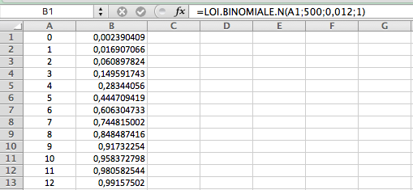
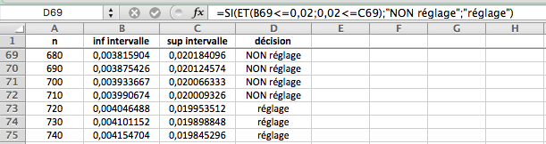

Ressources mathématiques > Base de données d'exercices > Exercices de dénombrement - probabilités - statistiques >
Exercices corrigés - Statistiques inférentielles, estimation
Enoncé 
Lors d'une élection opposant 2 candidats, un sondage d'opinion réalisé sur un échantillon
de 1000 personnes donne 52\% des voix au
candidat $A$, et 48\% au candidat $B$.
- Donner un intervalle de confiance au niveau 0,95 des intentions de vote pour $A$.
- Combien suffirait-il interroger de personnes pour qu'il y ait moins de 5\% de chances que $B$ l'emporte, si $A$ a recueilli 52\% des intentions de vote dans le sondage?

Enoncé
Dans cet exercice, on survole quelques propriétés de l'estimation de paramètres au programme de l'écrit du capes.
- Soit $X$ une variable aléatoire suivant une loi normale centrée réduite.
- Démontrer que pour $\alpha\in ]0,1[$, il existe un unique réel positif $t_\alpha$ tel que $P(-t_\alpha\leq X\leq t_\alpha)=1-\alpha$.
- En utilisant une table de la loi normale, donner une valeur approchée pour $t_{0,05}$, $t_{0,01}$.
- Estimation d'une proportion. Dans une population, un caractère est présent dans une proportion $p$.
On cherche à estimer la valeur de $p$. Pour cela, on étudie un échantillon de $n$ éléments de cette population,
et on désigne par $X_n$ le nombre de fois où ce caractère est retrouvé dans l'échantillon.
- Quelle est la loi de $X_n$?
- On pose $Z_n=\frac{X_n-np}{\sqrt{np(1-p)}}$. Justifier, que, pour tous réels $a<b$, on a $$P(Z_n\in[a,b])\to \int_{a}^b\frac1{\sqrt{2\pi}}e^{-t^2/2}dt.$$
- On fixe $\alpha\in]0,1[$, et on pose $\displaystyle I_n=\left[p-t_\alpha\frac{\sqrt {p(1-p)}}{\sqrt n}; p+t_\alpha\frac{\sqrt{ p(1-p)}}{\sqrt n}\right].$ Déduire des questions précédentes que $\lim_{n\to+\infty}P(X_n/n\in I_n)= 1-\alpha.$
- Vérifier que $\displaystyle I_n\subset\left[p-\frac{t_\alpha}{2\sqrt n};p+\frac{t_\alpha}{2\sqrt n}\right].$
- Vérifier que $$X_n/n\in \left[p-\frac{t_\alpha}{2\sqrt n};p+\frac{t_\alpha}{2\sqrt n}\right]\iff p\in \left[\frac{X_n}n-\frac{t_\alpha}{2\sqrt n};\frac{X_n}n+\frac{t_\alpha}{2\sqrt n}\right].$$ Dans la pratique, on fait l'approximation suivante : si $n\geq 30$, $np\geq 5$ et $n(1-p)\geq 5$, alors on considère que $P(X_n/n\in I_n)\geq 1-\alpha$. On dit alors que l'intervalle $\displaystyle \left[\frac{X_n}n-\frac{t_\alpha}{2\sqrt n};\frac{X_n}n+\frac{t_\alpha}{2\sqrt n}\right]$ est un intervalle de confiance au niveau $1-\alpha$ de $p$. Ceci signifie concrètement (modulo l'approximation) la chose suivante : Si dans une population un caractère est présent dans une proportion $p$, si lorsque l'on observe $n$ éléments de cette population, le caractère est présent avec une fréquence valant $f=X_n/n$, alors, la probabilité que $p$ soit dans l'intervalle $\displaystyle \left[\frac{X_n}n-\frac{t_\alpha}{2\sqrt n};\frac{X_n}n+\frac{t_\alpha}{2\sqrt n}\right]$ est supérieure ou égale à $1-\alpha$.
- Application numérique : lors d'une élection opposant 2 candidats, un sondage d'opinion réalisé sur un échantillon
de 1000 personnes donne 52\% des voix au
candidat $A$, et 48\% au candidat $B$.
- Donner un intervalle de confiance au niveau 0,95 des intentions de vote pour $A$.
- Combien de personnes suffirait-il d'interroger pour qu'il y ait moins de 5\% de chances que $B$ l'emporte, si $A$ a recueilli 52\% des intentions de vote dans le sondage?
Enoncé
Une entreprise spécialiste dans la fabrication de plateaux pour des tables utilise une machine qui débite des planches de 2 mètres de longueur. Une étude statistique sur un très grand nombre de plateaux usinés montre que la probabilité que le plateau comporte un défaut, et donc qu'il ne soit pas utilisé pour la fabrication d'une table, est égale à 0,012. Des contrôles qualité sont effectués sur des échantillons de 500 plateaux et un réglage de la machine pourrait être prévu si les défauts observés sont trop nombreux.
- Un technicien, qui a observé 10 plateaux présentant un défaut sur un échantillon de 500 plateaux (c'est à dire une proportion de 2\% de plateaux défectueux)
et qui se souvient de ce qu'il a appris en classe de première produit la feuille Excel suivante.
Doit-il envisager d'effectuer un réglage de la machine ? Expliquer proprement son raisonnement. Quel est le niveau de confiance exact de sa décision ?
- Le technicien veut s'assurer qu'il a pris la bonne décision. Il s'adresse à son collègue pour lui demander une vérification. Celui-ci n'a pas de tableur à sa disposition, mais se souvient de ce qu'il a appris en classe de terminale. Au bout de quelques minutes, après avoir construit un intervalle de fluctuation asymptotique au seuil de 95\% et vérifié que les conditions étaient réunies pour utiliser cet intervalle en vue d'une prise de décision, il confirme à son collègue que la décision qu'il a prise était la bonne. Quel a été son raisonnement ?
- Les deux techniciens ont de sérieux doutes sur le réglage de la machine et vont chercher à effectuer le contrôle sur un échantillon plus important. Ils construisent alors la feuille de tableur suivante qui permet de déterminer l'intervalle de fluctuation asymptotique au seuil de 95\% pour différentes valeurs de la taille $n$ de l'échantillon prélevé.

- Que cherchent-ils à détecter dans la colonne D ?
- Quelles formules ont-ils saisies dans les cellules B69 et C69 ?
- Quelle conclusion peuvent-ils tirer de ce tableau ?
- A l'aide d'un calcul, proposer une conclusion plus précise que celle obtenue à la question précédente.